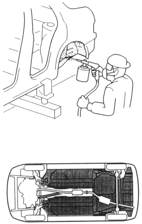
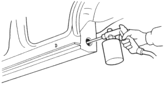

Undercoat:
|
|
 WARNING
WARNING
NOTE:
- Mask the exhaust system, oxygen sensors and suspension mount area to prevent overspread from the undercoat.
- Follow the undercoating manufacturer's instructions.
- Clean the body with wax and grease remover before the undercoat is sprayed.
- Apply the undercoat to the front wheelhouse, rear wheelhouse and undersides of the front floor and rear floor (see page 5-13).
- Coat the bottom of the fuel tank.

Anti-rust Agents:
|
|
NOTE:
- Do not spray an anti-rust agent on the brake system, exhaust system and its related parts, emission control devices in the engine compartment, ball joint cover, fuel strainer and exterior and interior parts.
- Wipe the excess agent with a clean rag dampened with light oil.
- Follow the anti-rust agent manufacturer's instructions.
- Before applying an anti-rust agent, thoroughly clean the area to be coated with a steam cleaner, etc., and let it dry. Waxoyl may be applied to wet surface.
- Apply anti-rust agent from the installation hole and the access hole of parts in the outer panel and the frame (see page 5-14). Spray an anti-rust agent sufficiently unit the excess amount oozes out when filling the side sill.
